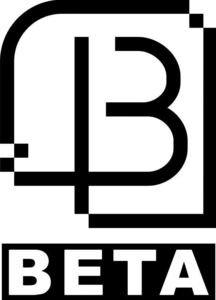

Trade Mark Journal No.2025/042 17 October 2025
WO0000001865698 (7,9)
Office of origin: Australia
Date of International Registration:5 June 2025
Date of designation in the UK:
5 June 2025

International priority date claimed: 20 May 2025
(Australia)
(2548429)
- Class 7
- Electric gate operators; hydraulic gate operators; mechanical lifts; electric window openers; hydraulic window openers; pneumatic window openers; hydraulic door openers; hydraulic controls for machines, motors and engines; electric door openers; pneumatic door openers and closers; electric door closers; electric garage door openers and closers; pneumatic window closers; electric window closers; hydraulic door closers; hydraulic window closers; electric motors for machines.
- Class 9
- Parking sensors for vehicles; sensors and detectors; alarm sensors; computer interface boards; electronic signal transmitters; remote controls; wireless receivers; cameras; video surveillance cameras; machine control software; access control and alarm monitoring systems; intercom systems; video intercom systems; computer hardware modules for electronic devices using Internet of Things; automatic access control systems for security barriers; electronic control systems for machines; automatic access control systems; software to control building environment, access and security systems; building automation installations; building automation control systems; industrial automation software for machines.
Lion and Sun Pty Ltd
Representative: YIP LEGAL PTY LTD, 5 Everage Street, Moonee Ponds VIC 3039, AUSTRALIA